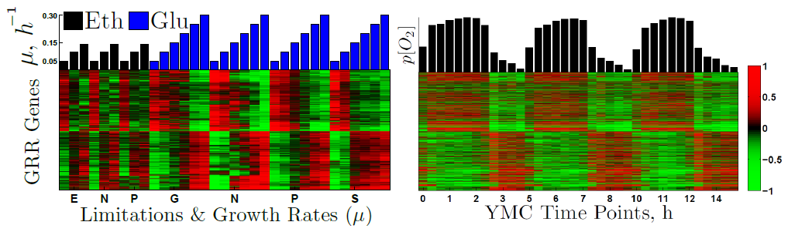

Supporting Information
Coordination among metabolism, cell growth and division
Coupling among Growth Rate Response, Metabolic Cycle and Cell Division Cycle in Yeast
We studied the steady-state responses to changes in growth rate of yeast when ethanol is the sole source of carbon and energy. Analysis of these data together with data from studies where glucose was the carbon source allowed distinguishing a "universal" growth rate response (GRR) common to all media studied from a GRR specific to the carbon source. Genes with positive universal GRR include ribosomal, translation and mitochondrial genes and those with negative GRR include autophagy, vacuolar and stress response genes. The carbon-source-specific GRR genes control mitochondrial function, peroxisomes and synthesis of vitamins and cofactors, suggesting this response may reflect the intensity of oxidative metabolism. All genes with universal GRR, which comprise 25% of the genome, are expressed periodically in the yeast metabolic cycle (YMC). We propose that the universal GRR may be accounted for by changes in the relative durations of the YMC phases. This idea is supported by oxygen consumption data from metabolically synchronized cultures with doubling times ranging from 5h to 14h. We found that the high-oxygen-consumption phase of the YMC can coincide exactly with the S phase of the cell division cycle, suggesting that oxidative metabolism and DNA replication are not incompatible. Our results also showed that the duration of the budded phases of the cell division cycle (CDC) decreases as growth rate increases independent of the nature of the limiting nutrient and the carbon source.
Transcriptional Growth Rate Response:
Slavov and Botstein (2011) |
PDF |
SI
cerevisiae growth rate response in different carbon sources and nutrient limitations" style="width: 500px;">
Slavov N.✉, Botstein D.✉ (2011)
Coupling among Growth Rate Response, Metabolic Cycle and Cell Division Cycle in Yeast
Mol. Biol. Cell, vol. 22 PDF | SI | MBoC Highlight
Coupling among Growth Rate Response, Metabolic Cycle and Cell Division Cycle in Yeast
Mol. Biol. Cell, vol. 22 PDF | SI | MBoC Highlight